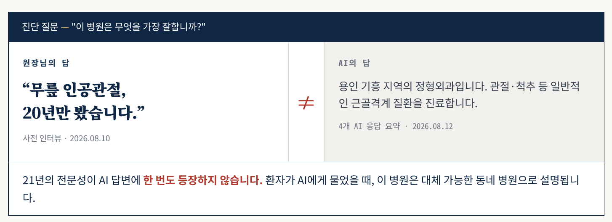

01AI 인식 진단
AI 4종에 같은 질문을 던져 병원의 강점을 무엇이라 답하는지, 기본 정보를 사실대로 안내하는지 측정합니다.
이미 진료 중인 병원과 개원을 준비하는 병원은 문제의 성격이 다릅니다. 같은 진단을 적용하면 한쪽에는 맞지 않습니다.
“잘하는 게 분명히 있는데,
그게 밖으로 전달되지 않습니다.”
AI 4종에 같은 질문을 던져 병원의 강점을 무엇이라 답하는지, 기본 정보를 사실대로 안내하는지 측정합니다.
홈페이지·지도 등록·블로그·예약 페이지의 정보가 서로 어긋나 있는지 확인합니다. AI가 오래된 정보를 고르는 원인입니다.
원장님 인터뷰에서 나온 표현을 병원의 공식 문장으로 정합니다. 표현이 갈리면 AI 답변도 갈립니다.
동일한 질문과 항목으로 3개월 뒤 다시 측정합니다. 무엇이 얼마나 바뀌었는지 숫자로 비교합니다.
“무엇으로 알려질지를
아직 정하지 못했습니다.”
진료권의 인구 구조와 생활 특성을 확인합니다. 어떤 환자가 실제로 존재하는 지역인지 먼저 봅니다.
공공 의료 데이터를 기준으로 인근 의료기관의 분포를 정리합니다. 비어 있는 자리를 근거로 찾습니다.
원장님의 전공·경력과 지역 수요가 겹치는 지점을 한 문장으로 정합니다. 개원 전에 정해야 모든 자료가 한 방향으로 갑니다.
개원 시점의 AI 인식을 측정해 0에서 시작하는 기준선을 남깁니다. 이후 변화가 전부 성과로 기록됩니다.
하나는 셀 수 있는 사실이고, 하나는 병원의 정체성입니다. 둘 다 있어야 무엇을 고쳐야 하는지가 나옵니다.
진료시간, 휴진일, 대표원장 경력, 보유 장비, 예약 방법 등 확인 가능한 항목을 하나씩 대조합니다. 맞으면 O, 틀리면 X로 판정하므로 해석의 여지가 없습니다.
원장님이 밝힌 병원의 최대 강점과 AI의 답변을 나란히 놓고 비교합니다. 진료시간이 틀린 것보다, 20년의 전문성이 아예 언급되지 않는 쪽이 더 큰 손실입니다.
원장님의 답과 AI의 답을 나란히 놓는 것에서 시작합니다. 설명이 필요 없는 형태로 만듭니다.

전체 리포트 중 AI 인식 진단 파트만 발췌한 것입니다. 실제 리포트는 병원 상황에 따라 구성이 달라집니다. 위 내용은 진단 양식 안내를 위한 가상 사례입니다.
첫 페이지만 봐도 상황이 파악되게 만듭니다. 원장님은 리포트를 읽을 시간이 없습니다.
어떤 AI에 몇 번 물었는지, 무엇을 기준으로 판정했는지 리포트에 그대로 적습니다.
진단으로 끝내지 않습니다. 무엇부터 손대야 가장 빨리 바뀌는지를 순서로 정리합니다.
진단에서 확정한 한 문장을 병원의 모든 접점에 심는 작업이 이어집니다. 홈페이지 본문을 다시 쓰고, 어긋난 정보를 정리하고, 그 문장을 뒷받침할 근거 자료를 만듭니다. 무엇을 먼저 할지는 진단 결과가 정합니다. 병원마다 순서가 다릅니다.
AI 솔루션을 만드는 회사입니다. AI가 정보를 무엇을 근거로 판단하고 어떻게 서술하는지, 만드는 쪽에서 보고 있습니다. 그래서 병원의 노출을 사는 대신, AI가 병원을 설명하는 내용 자체를 다룹니다.
보험·의료·금융 산업의 행동 예측 솔루션을 자체 엔진으로 개발해 왔습니다.
인상이나 감이 아니라 공개된 의료·상권 데이터와 AI 응답 기록으로 판단합니다.
같은 질문과 항목으로 다시 측정합니다. 바뀌지 않았다면 바뀌지 않았다고 적습니다.
회사와 솔루션에 대한 내용은 브릿지에이치 홈페이지에서 확인하실 수 있습니다.
두 가지입니다. 첫째는 대표성으로, 원장님이 밝힌 병원의 최대 강점을 AI가 같은 내용으로 답하는지를 봅니다. 둘째는 정확성으로, 진료시간·휴진일·경력·장비 등 기본 정보를 AI가 사실대로 안내하는지를 항목별로 O와 X로 판정합니다.
됩니다. 다만 접근이 다릅니다. 신규 병원은 AI가 아직 병원을 모르는 상태이므로, 현재 인식을 교정하는 것이 아니라 어떤 강점으로 인식되게 만들 것인지를 먼저 설계합니다. 진료권의 인구 구조와 인근 의료기관 분포를 근거로 포지션을 정하고, 개원 시점의 AI 인식을 기준선으로 기록해 이후 변화를 비교합니다.
노출을 사는 것이 아니라, AI가 병원을 설명하는 내용 자체를 바꾸는 작업입니다. 광고는 집행을 멈추면 노출이 사라지지만, AI가 참조하는 병원의 공식 문장과 근거 자료는 그대로 남습니다.
원장님 인터뷰 한 번이면 시작됩니다. 가장 중요한 질문은 "이 병원은 무엇을 가장 잘합니까"이며, 이 답이 있어야 AI 응답과의 비교가 가능합니다. 나머지 자료는 공개된 정보와 병원이 운영 중인 채널에서 확인합니다.
진단에서 확정한 한 문장을 기준으로 홈페이지 본문을 다시 쓰고, 채널별로 어긋난 정보를 정리합니다. 이후 영상과 기고 등 외부 근거 자료를 단계적으로 만듭니다. 순서는 진단 결과에 따라 달라집니다.
병원의 상황과 진행 범위에 따라 달라집니다. 진단 범위를 확인한 뒤 안내드리며, 최초 진단은 무료로 진행합니다.
확인해 보신 적이 없다면,
그것부터 보내드리겠습니다.
병원명과 연락처만 남겨 주시면 됩니다. 자료 준비나 사전 미팅 없이 시작합니다.